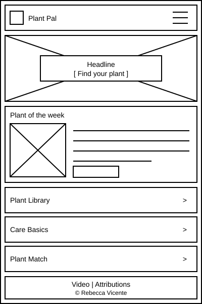
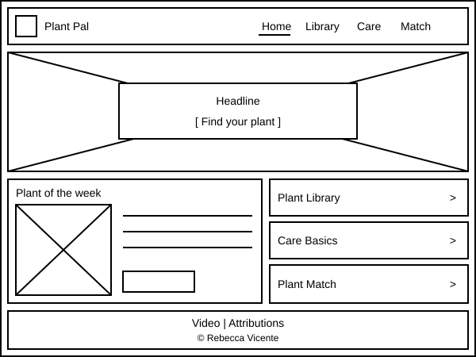

Site Name
Plant Pal
This name sounds friendly and approachable, which fits a guide for beginners. It says the site is a companion that helps people keep their houseplants alive.
Optional domain idea (availability not checked): plantpal-guide.com
Site Purpose
Plant Pal helps beginners choose and care for houseplants. The site provides:
- A searchable plant library with light needs, watering frequency, difficulty, and pet safety for at least 15 plants.
- A care basics page covering watering, light, soil, repotting, pests, and troubleshooting.
- A plant match form that collects a visitor's space and routine so they can get a plant recommendation.
Scenarios
- Which houseplants are safe for cats and dogs?
- What is the easiest plant for a room with very little sunlight?
- Why are the leaves on my plant turning yellow?
- How often should I water a plant if I travel a lot?
Color Scheme
The palette uses leafy greens with a light mint background and one warm yellow accent. This document uses only these colors.
-
Moss #1f3d2bBody text, page header, footer, and card backgrounds on dark areas.
-
Fern #2f6b3fHeadings, links, navigation bar, and borders.
-
Mint #eaf4ecPage background.
-
White #ffffffContent sections, cards, and text on dark backgrounds.
-
Sun #e9b949Accent for the header border, buttons, and hover and focus states.
Typography
-
Bricolage Grotesque for headings, the site name, and navigation. It has a friendly character that gives the site its personality.
Easy plants for low light
-
Source Sans 3 for body text, card details, and form labels. It is clean and easy to read at small sizes.
Water when the top inch of soil feels dry to the touch.
Wireframe
Black and white wireframes of the home page at small and large viewport sizes.

